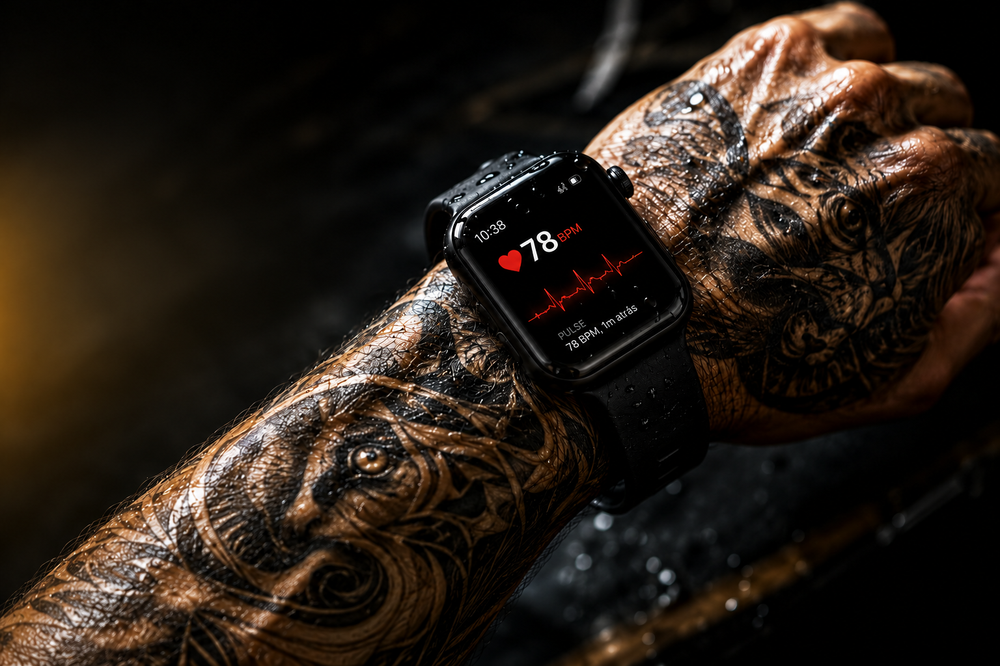

A · Hoje
Texto longo + foto só depois do scroll. Muita informação, pouco produto na 1ª tela.
Pede senha a todo momento, não lê batimentos, desconecta ou pausa treinos sozinho? Em braços tatuados, a tinta bloqueia o sensor ótico…
Comprar — 62,90 + frete Como funciona
B · Curto demais
Bonito, mas sem os gatilhos que o público da feira reconhece na hora.
SENSORTATTOOFIX
Sensor TattooFix é a lente ótica que restaura pulso, batimentos e treinos.
C · Meio-termo (recomendado)
Foto full-bleed + os 3 problemas da feira em lista curta — sem parágrafo SEO.
SENSORTATTOOFIX
Se o seu relógio…
Sensor TattooFix é a lente ótica que restaura pulso, batimentos e treinos.